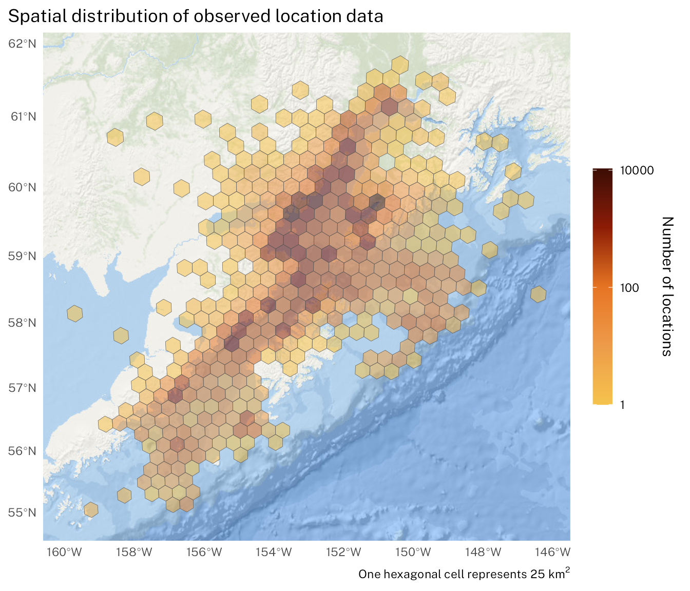

summary_tbl <- tar_read(locs_data) %>%
as_tibble() %>%
select(deployid, speno, sex, age, tag_family, deploy_dt, end_dt) %>%
group_by(speno, sex, age) %>%
summarise(n_tags = n_distinct(tag_family),
deploy_start = min(deploy_dt),
deploy_end = max(end_dt)
) %>%
group_by(sex, age) %>%
summarise(n_tags = sum(n_tags),
n_seals = n())Estimating Movement Paths and Haul-out Behavior of Harbor Seals (Phoca vitulina) in Cook Inlet, Alaska
Importing & Tidy-ing the Telemetry Data
Background
Between 2004 and 2006, 76 were captured and released with satellite-linked bio-loggers attached as part of a research effort in Cook Inlet, Alaska. Each transmitter was glued to the hair on the back of the seal using durable epoxy. Fourteen of the seals were also equipped with specially developed transmitters that were attached to one of the rear flippers. Table 1 provides more information on the distriubtion of deployments across sex and age classes. Transmissions from the 89 bio-loggers resulted in 73482 location estimates and 270168 haul-out behavior records. Harbor seals captured in central and southern Cook Inlet ranged as far southwest as the Semidi Islands and some seals used habitats around the north and northeast side of Kodiak Island. There was a strong seasonal pattern of more coastal and restricted spatial use during the spring and summer (breeding, pupping, molting) and more wide-ranging movements within and outside of Cook Inlet during the winter months. These insights into seasonal harbor seal movements, behavior and abundance are critical for understanding foraging ecology, marine habitat use, and risk of impacts from industrial accidents such as oil spills.
| Bio-logger Deployments on Harbor Seals | ||
|---|---|---|
| Sample Size | ||
| # of tags1 | # of seals | |
| Female | ||
| ADULT | 20 | 16 |
| SUBADULT | 12 | 11 |
| YEARLING2 | 3 | 3 |
| YOUNG OF YEAR | 7 | 6 |
| total | 42 | 36 |
| Male | ||
| ADULT | 23 | 23 |
| SUBADULT | 15 | 11 |
| YEARLING2 | 2 | 2 |
| YOUNG OF YEAR | 7 | 4 |
| total | 47 | 40 |
| total | 89 | 76 |
|
1
some seals were released with two bio-logger devices
2
age class 'YEARLING' is often combined with 'SUBADULT
|
||
Data Handling and Management
All the processes and code used for this project are available as a repository on GitHub. Data retrieval, processing, analysis are all managed as a pipeline via the targets package in R. For a more detailed exploration of the code and process, examine the _targets.R file and the functions within the project’s R folder.
All of the tags deployed on seals in Cook Inlet were manufactured by Wildlife Computer and originally processed through their data portal. To facilitate access to data from the portal within R, we relied on the wcUtils R package which is available from GitHub. All telemetry data within the Polar Ecosystems Program (PEP) is maintained within a PostgreSQL database. This also includes important details regarding the individual seal (e.g. speno, age class, sex, morphometrics) and additional deployment metadata for each bio-logger (e.g. deployid, deployment start/end times, tag serial number). Initial data were queried from the database and, for the location observations, a course speed filter was applied (7.5 meters/sec) to remove any egregiously wrong location estimates. The percent-dry timeline data were mostly as is from the database
Caution
The current version of the data delivered via pins does not group deployments by speno. Instead each deployment is treated as a separate individual seal. This is problematic for those seals that were released with two bio-logging devices. This will be resolved in the next major iteration of the data published via pins.
Mapping the Observed Location Data
First, we will take a look at the spatial distribution of the observed location estimates (this is after the course speed filter has been applied). In Figure 1, the observed locations are concentrated within the Cook Inlet region — as would be expected — but, note, there is considerable expansion of the range into the Shelikof Strait, Kodiak, and out toward the shelf break in the Gulf of Alaska. The error associated with observed locations is also evident as the spatial distribution extends well inland beyond what would be sensible for harbor seals.

Distribution of Data Across Time
As with spatial distribution, it can also be informative to explore how the amount of data varied over time. This is especially important with bio-logging data because not all deployments start at the same time and deployment end dates are determined by a combination of factors (e.g. battery life, tag failures, adhesive failures, molt, and animal behavior). For this research project, there were two research cruises per year. One was timed to occur just after molt (September-October) so devices adhered to the hair would have potential to last for 9-12 months. The other cruise was timed for May to correspond with the expected median tag duration from the fall cruise. This also ensured a good sample size of deployments would be active during the pupping season (~June).
locs_day_tbl <- tar_read(locs_data) %>%
tibble::as_tibble() %>%
dplyr::mutate(yday = lubridate::yday(locs_dt),
year = lubridate::year(locs_dt)) %>%
dplyr::filter(year %in% c("2004", "2005", "2006")) %>%
dplyr::group_by(yday) %>%
dplyr::count()
The density of locations presented in Figure 2 are pooled across all the years of the study. But, within a given year, there are larger gaps in data coverage that are important to note. Figure 3 presents the density of location data by year and provides a more insightful view. For instance, most of the data in the study for the months of January through April come from deployments in 2006. Only the months of May-July and September-December are represented in more than one year — all of which is to be expected given the original objectives of the study, typical duration of bio-loggers, and the timing of research cruises.
locs_day_year_tbl <- tar_read(locs_data) %>%
tibble::as_tibble() %>%
dplyr::mutate(yday = lubridate::yday(locs_dt),
year = lubridate::year(locs_dt)) %>%
dplyr::filter(year %in% c("2004", "2005", "2006")) %>%
dplyr::group_by(year, yday) %>%
dplyr::count()
Percent-dry Timeline Data
In addition to the location estimates, the bio-loggers in this study also recorded the percentage of each hour the wet/dry sensor was dry. This is a way to explore haul-out behavior because, other than a few rare instances when a seal rests on the surface for extended periods, the percent-dry can be interpreted as percent of the hour hauled out. Haul-out behavior data were recorded and transmitted via the Argos satellite network as hourly percent-dry timelines. For each hour of a day, the wet/dry sensor was polled by the tag firmware every few seconds and the percent of the hour in the dry state was calculated. On board the bio-logger, hourly percent-dry data were rounded to the nearest 10% inclusive of 0% and 100% and additional values at 3% and 98%.

Note
There’s currently an issue with the figure above b/c there’s missing data for entire months of July and August. Will need to supplement the data record with missing values to make the plot consistent.